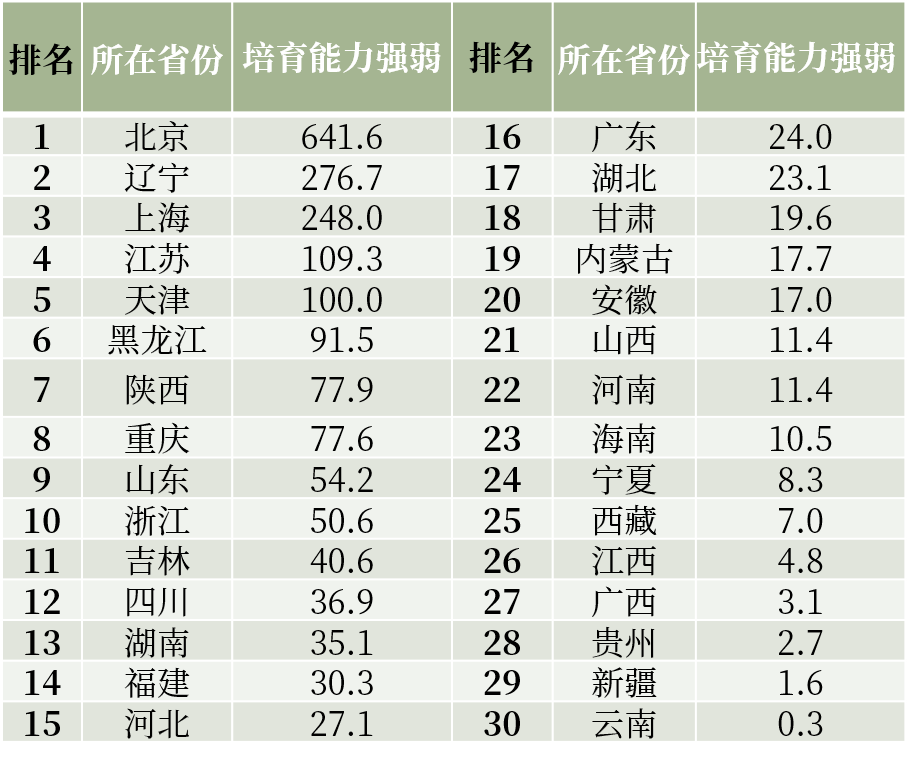

细数全国近4000名艺术特长生，他们广泛地分布在全国30个省。


从上图可知，主要的艺术特长生集中倾斜在北京、辽宁、上海、江苏几个强势省市，近似“二八定律”分布。
北京，作为素质教育导向和教育资源优势省份，每1000个高考考生中就有近7人通过艺术特长生降分进入大学，远远超过其它省市。
（将鼠标放在相应气泡上，即可查看对应省份名称和录取人数）
从整体上看，艺术特长生的男女性别比基本平均，女生比男生稍微占优势一些。 在具体的艺术类目上，学习民乐和舞蹈的女生明显比男生更多一些。
（将鼠标放在相应气泡上，即可查看对应省份名称和录取人数）
其中占比最大的是管弦乐类和民乐类艺术特长生。总体来说，学管弦乐的男生比较多，北京考生最多，辽宁和江苏紧随其后。民乐类艺术特长生的分布也很有意思。江苏、辽宁和山东成为前三名的“民乐大省“。而民乐项目中，二胡和唢呐是山东的强势项目，琵琶和竹笛成为江苏民乐考生的主体。这个现象和当地的民间文化有着密不可分的关联。
（将鼠标放在相应气泡上，即可查看对应省份名称和录取人数）
全国舞蹈特长生最密集的两个地区是辽宁和北京。但有趣的是，北京的“舞特”以女生为主，辽宁的“舞特”中则男生占据了压倒性的优势。经过采访发现，辽宁省尤其大连市的一些重点高中，考虑到舞蹈这个项目中女生竞争比较激烈，所以会从高一入学开始选拔身体条件较好的男生给他们开设舞蹈班，逐渐形成了独特的“大连男子”现象。
辽宁输送了最多的声乐和表演特长生。一个有趣的现象是，表演特长生大多集中在辽宁、黑龙江、北京、天津、河北、山东这些北方省市，似乎北方比南方的“戏精”更多。
总体上看，乐器类特长生占比近七成，是特长生中的绝对“主力军”。辽宁考生更擅长声乐和表演，北京的考生更多地选择了优雅的西洋管弦乐。